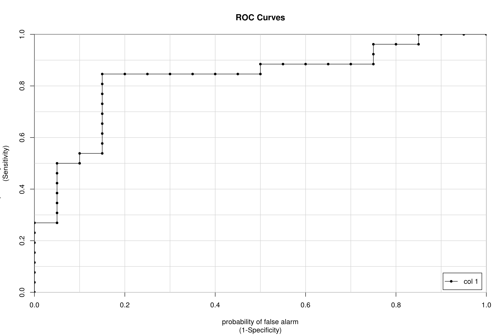
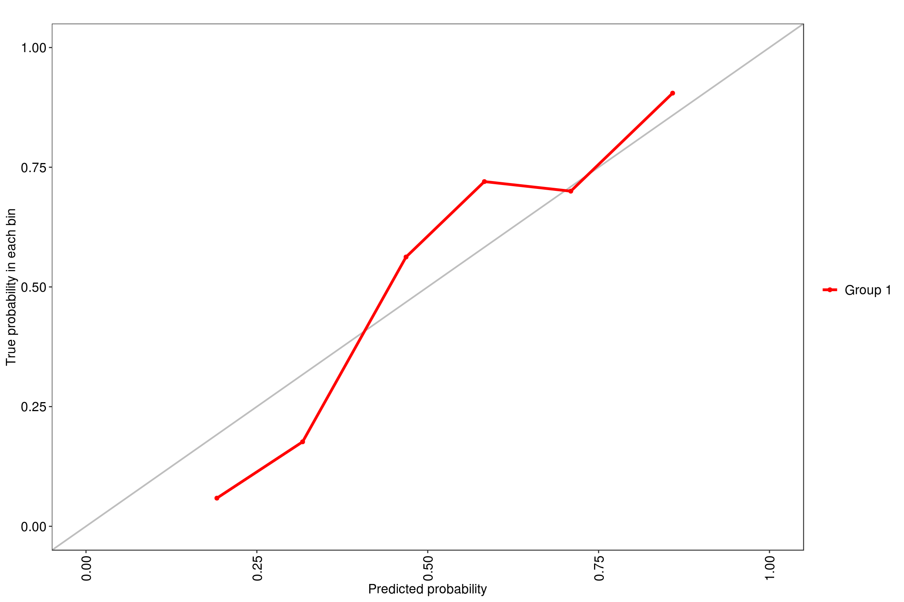
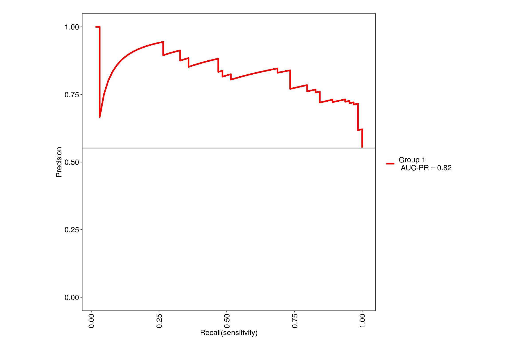
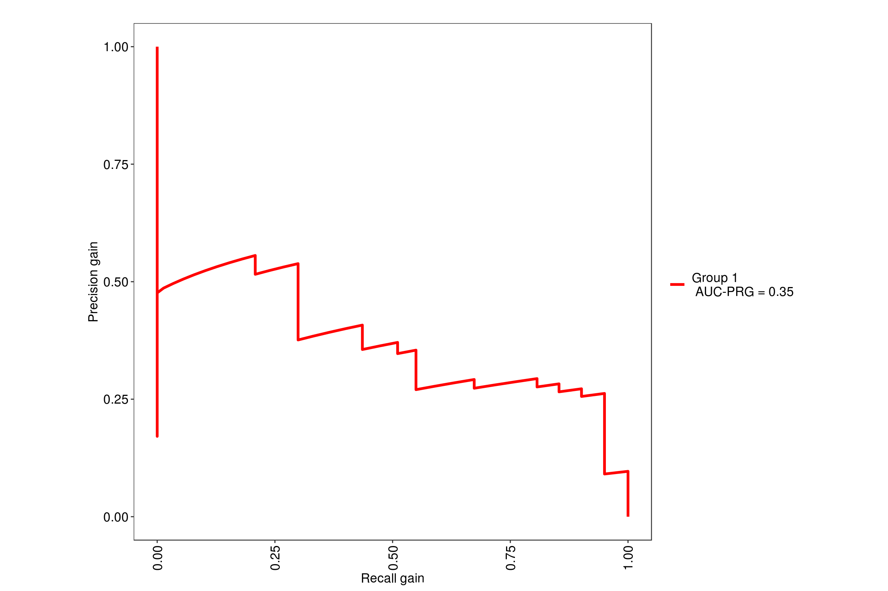
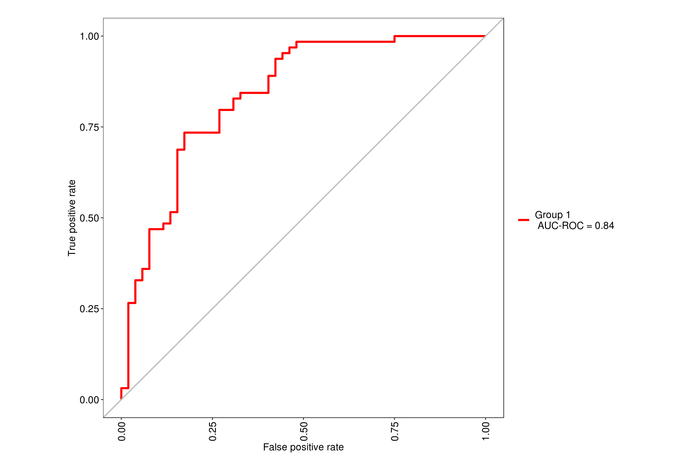

I’ve looked into a breast cancer dataset taken from https://archive.ics.uci.edu/ml/datasets/Breast+Cancer+Coimbra. We will be creating predictive models that are able to distinguish between healthy individuals and those who have breast cancer based on 9 predictor variables. These predictors are taken from individual’s blood such as Glucose, Insulin, etc. as well as their age and BMI.
library(caret)
library(tidyverse)
library(readr)
cancer <- read.csv("dataR2.csv")
which(is.na(cancer))integer(0)cancer$Classification <- factor(ifelse(cancer$Classification == 1, "Healthy", "Patient"))
str(cancer)'data.frame': 116 obs. of 10 variables:
$ Age : int 48 83 82 68 86 49 89 76 73 75 ...
$ BMI : num 23.5 20.7 23.1 21.4 21.1 ...
$ Glucose : int 70 92 91 77 92 92 77 118 97 83 ...
$ Insulin : num 2.71 3.12 4.5 3.23 3.55 ...
$ HOMA : num 0.467 0.707 1.01 0.613 0.805 ...
$ Leptin : num 8.81 8.84 17.94 9.88 6.7 ...
$ Adiponectin : num 9.7 5.43 22.43 7.17 4.82 ...
$ Resistin : num 8 4.06 9.28 12.77 10.58 ...
$ MCP.1 : num 417 469 555 928 774 ...
$ Classification: Factor w/ 2 levels "Healthy","Patient": 1 1 1 1 1 1 1 1 1 1 ...The dataset has no missing values and I’ve changed Classification to a factor where 1 means that they are healthy and 2 means that they are a patient with breast cancer.
The predictor variables will all be quantitative data with 116 observations.
glm()set.seed(0)
rows <- sample(nrow(cancer))
cancer <- cancer[rows,] #shuffles the data
split <- round(nrow(cancer) * .6)
train <- cancer[1:split,]
test <- cancer[(split + 1):nrow(cancer),]Confusion Matrix and Statistics
Reference
Prediction Healthy Patient
Healthy 17 6
Patient 3 20
Accuracy : 0.8043
95% CI : (0.6609, 0.9064)
No Information Rate : 0.5652
P-Value [Acc > NIR] : 0.0005869
Kappa : 0.6087
Mcnemar's Test P-Value : 0.5049851
Sensitivity : 0.8500
Specificity : 0.7692
Pos Pred Value : 0.7391
Neg Pred Value : 0.8696
Prevalence : 0.4348
Detection Rate : 0.3696
Detection Prevalence : 0.5000
Balanced Accuracy : 0.8096
'Positive' Class : Healthy
Accuracy
0.8043478 After splitting the data, I made a glm model using Classification as the response storign this as mod. We then use this model to predict into to our test dataset we held in reserve. The result of this are probabilities stored in pred.
After creating a list of “healthy”, I arbitrary set a 0.5 cutoff for the probabilities in the prediction to say that they are patients. I wanted to see how well my model performed against new data it hasn’t seen before, this is illustrated by the confusion matrix.
We can see that overall the model was correct about 80.43% of all cases. The model’s sensitivity of 85% is the true positive rate. It is the proportion of healthy samples that was correctly identified. The model’s specificity of 76.9% is the true negative rate. It is the proportion of patient sample that was correctly identified.
Since I had arbitrarily decided to set the cut off at 0.5 of our predicted values on whether those probabilities will correspond to either healthy or patient, maybe a different threshold will yield better results?
library(caTools)
pred <- predict(mod, newdata = test, type = "response")
colAUC(pred, test$Classification, plotROC = T)
[,1]
Healthy vs. Patient 0.8288462# Create trainControl object: myControl
set.seed(7)
myControl <- trainControl(
method = "cv",
number = 5,
summaryFunction = twoClassSummary,
classProbs = TRUE, # IMPORTANT!
verboseIter = FALSE
)
model <- train(Classification ~ ., data = cancer,
method = "glm",
trControl = myControl)
modelGeneralized Linear Model
116 samples
9 predictor
2 classes: 'Healthy', 'Patient'
No pre-processing
Resampling: Cross-Validated (5 fold)
Summary of sample sizes: 92, 94, 92, 93, 93
Resampling results:
ROC Sens Spec
0.7833566 0.6927273 0.7179487trainControl() to use cross validation on our dataset. Earlier we arbitrarily decided to split the dataset 60/40. Now we will run the same test but with 90/10 since we are using 10 folds, arbitrarily. Each fold however is tested on each other to reduce out of sample variance.We want to now use a non-linear model such as random forest or glmnet in the hopes of having a better AUC. A good thing to note is that we do not have any missing values in the dataset so we can skip preprocessing. Typically cross validation folds of 5 to 10 of the dataset would yield optimal results. We will be using 5x5 repeated cross validation for the both of our models.
We will be using the tuneLength = 9 since our data has 9 predictor variables so it will simulate random forest with 2 through 9 variables at each split. Using the MLeval package, we can quickly get the ROC value of .85 for this model.
note: only 8 unique complexity parameters in default grid. Truncating the grid to 8 .
Now we will look into the glmnet model with the same number of repeated folds. The tuning parameters for a glmnet uses lasso and ridge, denoted by alpha/lambda values. Here we will test around 40 values 2 from the alpha and 20 from lambda, as the different parameters of the glmnet. We end up with a ROC value of .79 so it seems like the random forest model is slightly better
model <- train(
Classification ~ ., data = cancer,
tuneGrid = expand.grid(alpha = 0:1,
lambda = seq(0.0001, 1, length = 20)),
method = "glmnet",
trControl = myControl
)
max(model[["results"]][["ROC"]])[1] 0.7965268The previous examples of the models show how each model performed but we may not we sure where the folds were split, so we want to make sure they’re using the same splits. Here we put the models into resamples() to directly compare the model’s performances.
set.seed(7)
myControl <- trainControl(
method = "repeatedcv",
number = 5,
repeats = 5,
summaryFunction = twoClassSummary,
classProbs = TRUE, # IMPORTANT!
verboseIter = FALSE
)
modelglmnet <- train(x = cancer[, 1:9],
y = cancer[,10],
metric = "ROC",
method = "glmnet",
tuneGrid = expand.grid(alpha = 0:1,
lambda = seq(0.0001, 1, length = 20)),
trControl = myControl)
modelranger <- train(Classification ~ .,
data = cancer,
tuneLength = 9,
metric = "ROC",
method = "ranger",
trControl = myControl)note: only 8 unique complexity parameters in default grid. Truncating the grid to 8 .# Create model_list
model_list <- list(glmnet = modelglmnet, rf = modelranger)
# Pass model_list to resamples(): ANS
ANS <- resamples(model_list)
# Summarize the results
summary(ANS)
Call:
summary.resamples(object = ANS)
Models: glmnet, rf
Number of resamples: 25
ROC
Min. 1st Qu. Median Mean 3rd Qu. Max. NA's
glmnet 0.6384615 0.7202797 0.7622378 0.7746970 0.8333333 0.9230769 0
rf 0.6433566 0.7961538 0.8461538 0.8396014 0.8769231 0.9884615 0
Sens
Min. 1st Qu. Median Mean 3rd Qu. Max. NA's
glmnet 0.4 0.5454545 0.7 0.6923636 0.8181818 1 0
rf 0.3 0.6000000 0.7 0.6967273 0.8000000 1 0
Spec
Min. 1st Qu. Median Mean 3rd Qu. Max. NA's
glmnet 0.4615385 0.6666667 0.7692308 0.7248718 0.7692308 1 0
rf 0.5000000 0.7692308 0.8461538 0.8148718 0.8461538 1 0We can see that the random forest is better looking at the mean or median of their ROC values. Where rf mean = 0.8396014 and glmnet mean = 0.7746970 so a random forest model would be able to predict whether an individual is healthy or has breast cancer compare to a glmnet model.